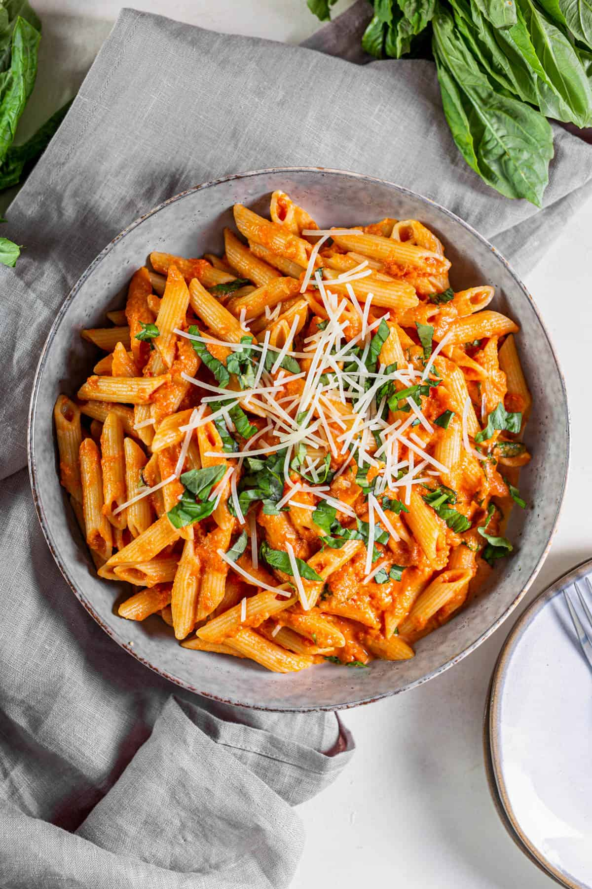

Featured
Tomato Basil Pasta
Ingredients
- 250 g pasta
- 2 cups cherry tomatoes
- 2 cloves garlic
- Fresh basil
- 2 tablespoons olive oil
- Salt and black pepper
How to make it
- Cook the pasta until al dente.
- Warm the olive oil and gently cook the garlic.
- Add the tomatoes and cook until softened.
- Toss with the pasta and fresh basil.
- Season, serve, and make it yours.